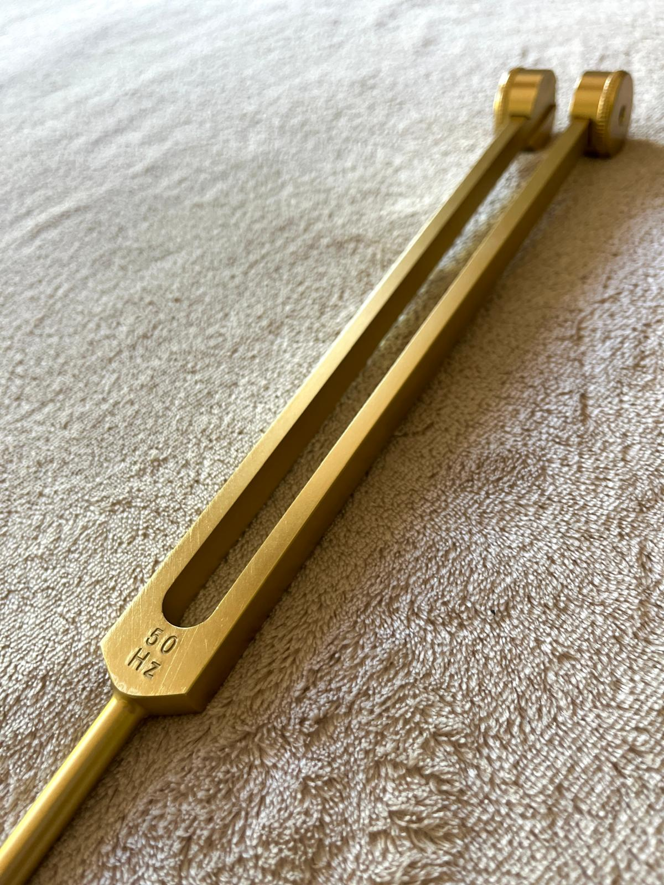

What's in a name?
ANARAH [ɑˈnaːra] is van Hebreeuwse oorsprong en is afgeleid van het woord 'anara', wat 'licht' of 'verlichting' betekent. In de oude Hebreeuwse traditie symboliseerden namen met een connotatie van licht vaak innerlijke leiding en wijsheid. Het is een naam van open hart-leiderschap. De energie is verfijnd, zuiver, helend en diep transformerend. Zacht én aanwezig. Het is herinneringswerk.
“In the small, quiet spaces you create by letting go. Your breath softens, your mind settles and your heart remembers its own rhythm.”
De kracht van klank
De klanken zelf hebben wortels in verschillende spirituele tradities:
- ANA — Hebreeuws, Arabisch en Aramees: 'ik ben' of 'van de adem'
- AH — universeel klankmantra: opent het hartchakra
- RA — oud-Egyptisch: zon, licht, bronbewustzijn
